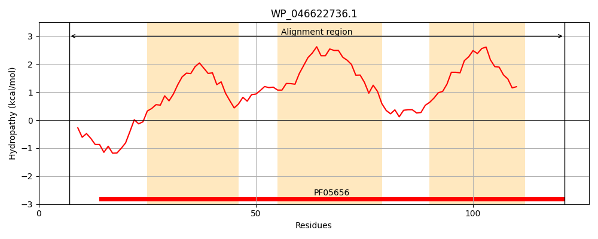
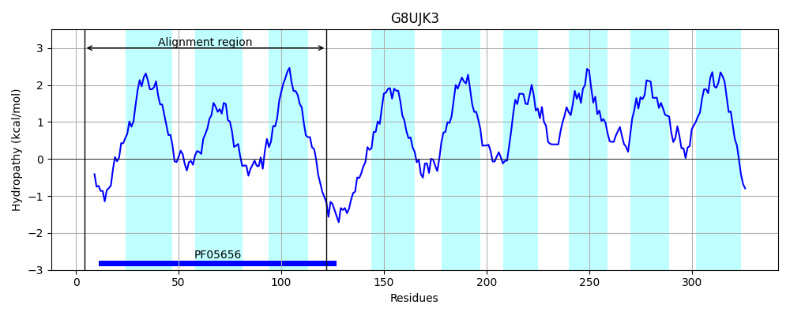
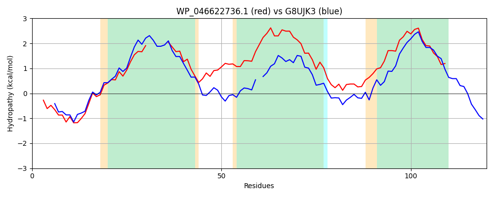

Hit Accession: G8UJK3
Hit TCID: 9.B.124.1.7
Hit Description: gnl|BL_ORD_ID|4874 gnl|TC-DB|G8UJK3|9.B.124.1.7 Putative membrane protein OS=Tannerella forsythia (strain ATCC 43037 / JCM 10827 / FDC 338) GN=BFO_0277 PE=4 SV=1
Mach Len: 120
e:0.000000
Query TMS Count : 3
Hit TMS Count: 9
TMS-Overlap Score: 2.750000
Predicted Substrates:None
BLAST Alignment:
| Protein Hydropathy Plots: | |
|---|---|
|  |  |
Pairwise Alignment-Hydropathy Plot: | |
|  | |